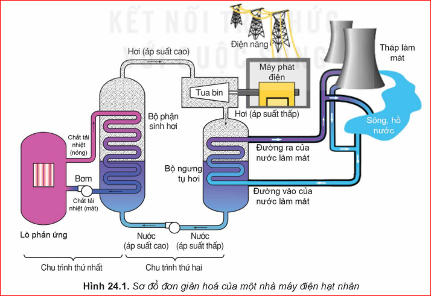
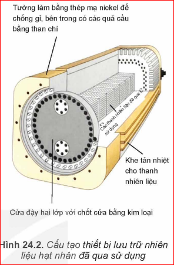
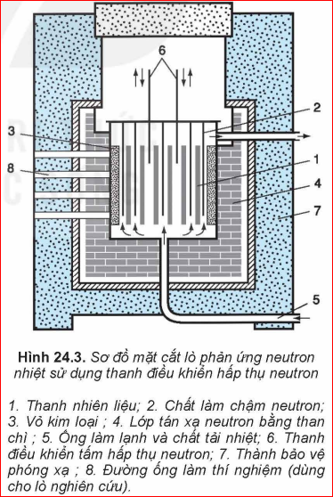
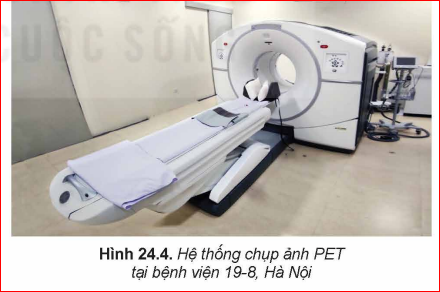
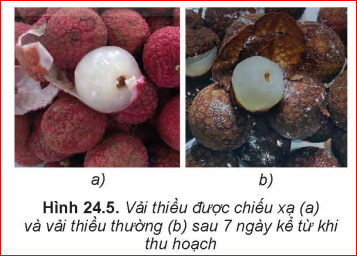

Chương IV: Vật lí hạt nhân và phóng xạ
Nhà máy điện hạt nhân có thể giải quyết vấn đề thiếu hụt năng lượng. Tuy vậy, một số quốc gia phát triển dự định sẽ đóng cửa các nhà máy điện hạt nhân trong tương lai. Nhà máy điện hạt nhân có những ưu điểm và nhược điểm gì?
Năng lượng toả ra trong các phản ứng hạt nhân thường được chuyển hoá thành điện năng thông qua hệ thống lò phản ứng hạt nhân, tua bin và máy phát điện để hoà vào lưới điện hoặc cung cấp năng lượng cho tàu ngầm, tàu phá băng.... Hệ thống khai thác năng lượng hạt nhân có thể hoạt động trong thời gian dài mà không cần bổ sung nhiên liệu.

Bộ phận chính của nhà máy điện hạt nhân là lò phản ứng hạt nhân. Chất tải nhiệt sơ cấp, sau khi chạy qua vùng tâm lò, sẽ chảy qua bộ trao đổi nhiệt, cung cấp nhiệt cho lò sinh hơi. Hơi nước làm chạy tua bin phát điện giống như trong nhà máy điện thông thường.
Nhà máy điện hạt nhân không trực tiếp phát khí thải ô nhiễm môi trường như \( CO \), \( CO_2 \),... và có thể phát điện liên tục nhiều năm cho tới khi phải thay nhiên liệu mới.
Tuy nhiên, việc xử lí chất thải hạt nhân đòi hỏi công nghệ phức tạp với chi phí cao. Vật liệu chứa chất thải hạt nhân cần có độ bền rất cao để bảo quản cất giữ hàng trăm năm vì chu kì bán rã của một số đồng vị như \( {}^{90}Sr \), \( {}^{137}Cs \) là rất lớn (khoảng 30 năm).

? 1. Vì sao các nhà máy điện hạt nhân thường được xây dựng cạnh hồ, sông và bờ biển?
? 2. Liệt kê các nguy cơ ảnh hưởng tới sức khoẻ con người và môi trường nếu không may xảy ra sự cố tại lò phản ứng hạt nhân.
✋ Thảo luận để thực hiện các yêu cầu sau:
Năm 1942, Fermi và các cộng sự đã lần đầu tiên thực hiện thành công các chuỗi phản ứng phân hạch duy trì điều khiển được trong lò phản ứng ở trường đại học Chicago (Mĩ). Lò phản ứng hạt nhân là một hệ thống được sử dụng để khởi tạo và điều khiển chuỗi phản ứng phân hạch hạt nhân dây chuyền. Phần lớn các lò phản ứng hạt nhân đều có nhiều bộ phận chức năng giống nhau (Hình 243). Nhiên liệu phân hạch trong phần lớn các lò phản ứng là 235U hay 239Pu. Để đảm bảo cho k = 1, trong các lò phản ứng người ta dùng các thanh điều khiển có chứa Bo hay Cd, là các chất có tác dụng hấp thụ neutron nhiệt (động năng dưới 0,1 eV). Khi số neutron trong lò tăng lên quá nhiều (k > 1), người ta cho các thanh điều khiển ngập sâu vào khu vực chứa nhiên liệu phân hạch để hấp thụ số neutron thừa. Nhờ vậy, năng lượng toả ra từ lò phản ứng không đổi theo thời gian.

Trong y học người ta khai thác các tính chất của tia phóng xạ để chẩn đoán và điều trị bệnh.
Người ta đưa các đồng vị phóng xạ vào cơ thể thông qua dược chất phóng xạ. Sử dụng thiết bị phát hiện tia phóng xạ (phương pháp theo dõi vết) để quan sát chức năng các cơ quan.
Kĩ thuật SPECT và PET thường được phối hợp với CT, MRI để tăng độ chi tiết hình ảnh. SPECT giúp theo dõi sự luân chuyển chất, chẩn đoán bệnh chính xác hơn.

✋ Thảo luận:
1. Tại sao người ta sử dụng tia gamma trong chụp ảnh phóng xạ cắt lớp bên trong cơ thể?
Trong điều trị ung thư, bệnh nhân dùng dược chất chứa đồng vị phóng xạ (ví dụ \( {}^{223}_{88}Ra \), \( {}^{177}_{71}Lu \)). Tế bào ung thư chết do hấp thụ bức xạ. Ngoài ra còn dùng máy xạ trị chiếu từ bên ngoài.
? Khi sử dụng máy xạ trị để chữa bệnh, tia phóng xạ có tác động lên các tế bào khoẻ mạnh không? Hãy tìm thông tin về các triệu chứng sau xạ trị.
Tia phóng xạ hỗ trợ nghiên cứu gây đột biến gene tạo giống cây trồng năng suất cao, kháng sâu bệnh. Tuy nhiên, thực phẩm biến đổi gene cần được đánh giá kỹ về tác động hệ sinh thái.

Phương pháp đánh dấu bằng đồng vị \( {}^{32}_{15}P \) (phóng xạ \( \beta \)) giúp nghiên cứu đường đi của phân bón trong cây.
Chiếu xạ thực phẩm giúp diệt vi trùng, kéo dài thời gian bảo quản, ngăn mọc mầm. Nhược điểm: có thể đổi màu, hương vị và giá thành cao.
✋ Thảo luận vai trò và đánh giá:
Câu 1: Trong nhà máy điện hạt nhân, năng lượng hạt nhân được chuyển hóa trực tiếp thành loại năng lượng nào trước khi làm quay tua bin?
Câu 2: Chất nào sau đây thường được dùng làm thanh điều khiển trong lò phản ứng hạt nhân?
Câu 3: Mục đích chính của việc chiếu xạ thực phẩm là gì?
Câu 4: Đồng vị \( {}^{137}Cs \) có chu kì bán rã khoảng 30 năm. Sau bao nhiêu năm thì lượng chất này còn lại 1/4 so với ban đầu?
Câu 5: Trong kỹ thuật PET, người ta sử dụng loại hạt nào sau đây phát ra từ dược chất phóng xạ?
Bài 1: Một lò phản ứng hạt nhân có công suất nhiệt \( 3000 \, MW \). Nếu hiệu suất chuyển hóa nhiệt thành điện là \( 33\% \), tính công suất điện đầu ra của nhà máy.
Bài 2: Một mẫu rác thải chứa \( 100 \, g \) chất phóng xạ \( {}^{90}Sr \) (\( T = 28 \) năm). Sau 84 năm, khối lượng \( {}^{90}Sr \) còn lại là bao nhiêu?
Bài 3: Mỗi phân hạch hạt nhân \( {}^{235}U \) tỏa ra năng lượng \( 200 \, MeV \). Tính năng lượng tỏa ra khi \( 1 \, g \) \( {}^{235}U \) phân hạch hoàn toàn. (Biết \( N_A = 6,02 \cdot 10^{23} \, mol^{-1} \)).